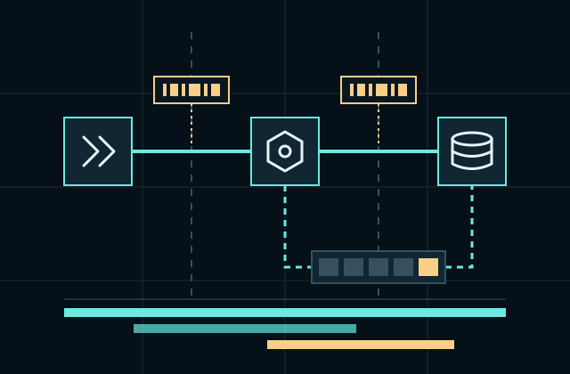
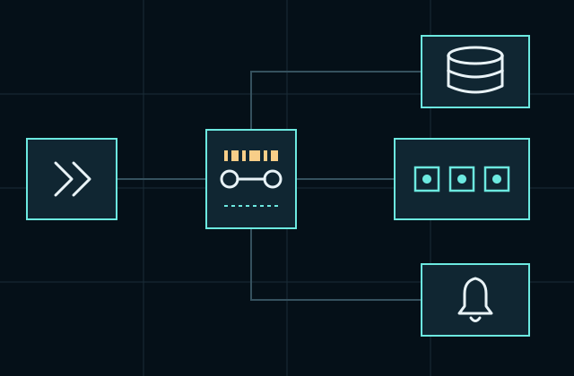

01 / CONNECTED BY DESIGN
Follow the request. Keep the context.
A connected observability platform for teams who need to understand the whole request, with trace context, service maps and practical alert budgets.

The same trace ID crosses every route, queue and store it touches.
THE THREE SIGNALS
Different evidence.
The same request.
Metrics reveal a pattern. Traces locate the delay. Logs explain the event. Keep the identifiers that join them together.

CONTEXT THAT TRAVELS
A boundary is not a blind spot.
Trace identifiers cross your HTTP routes and queue messages. Service ownership, environment and deployment tags stay attached, so a comparison can be narrowed to the change you are investigating.
- Keep production and staging queries separate.
- Drop sensitive request fields before ingestion.
- Control sampling at the edge and preserve error traces.
- Export the records you need in an open format.
START SMALL. LEARN SOMETHING.
An adoption path with useful stopping points.
-
01 / ONE JOURNEY
Follow the customer’s route.
Instrument one request from gateway to storage. Verify that its identifier survives every boundary.
-
02 / ONE DECISION
Choose a budget.
Decide how much latency and error a service can tolerate, with the people who operate it.
-
03 / ONE HABIT
Keep a useful view.
Save a small watchlist, review it at release time and change the thresholds when the workload changes.